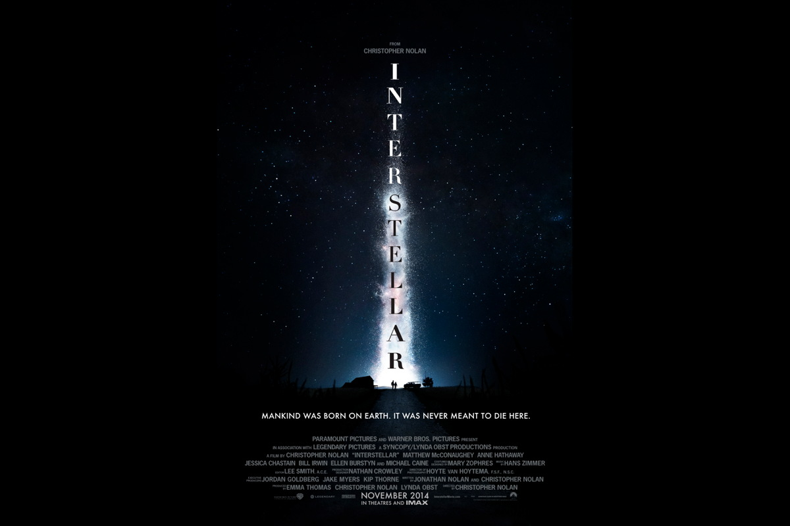
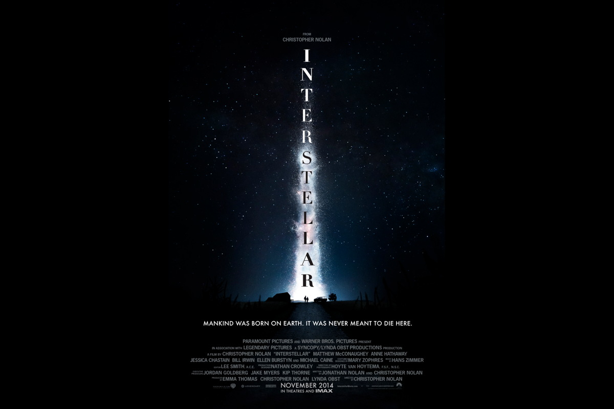

Interstellar is a 2014 epic science fiction film co-written, directed, and produced by Christopher Nolan. Set in a dystopian future where humanity is embroiled in a catastrophic blight and famine, the film follows a group of astronauts who travel through a wormhole near Saturn in search of a new home for humankind.Brothers Christopher and Jonathan Nolan wrote the screenplay, which had its origins in a script Jonathan developed in 2007 and was originally set to be directed by Steven Spielberg. Kip Thorne, a Caltech theoretical physicist and 2017 Nobel laureate in Physics, was an executive producer, acted as a scientific consultant, and wrote a tie-in book, The Science of Interstellar. Cinematographer Hoyte van Hoytema shot it on 35 mm movie film in the Panavision anamorphic format and IMAX 70 mm. Principal photography began in late 2013 and took place in Alberta, Iceland, and Los Angeles. Interstellar uses extensive practical and miniature effects, and the company Double Negative created additional digital effects.Interstellar premiered in Los Angeles on October 26, 2014. In the United States, it was first released on film stock, expanding to venues using digital projectors. The film received generally positive reviews from critics and grossed over $681 million worldwide ($703 million after subsequent re-releases), making it the tenth-highest-grossing film of 2014. It has been praised by astronomers for its scientific accuracy and portrayal of theoretical astrophysics.axz Interstellar was nominated for five awards at the 87th Academy Awards, winning Best Visual Effects, and received numerous other accolades.
Development and financing (Click on mobile)
The premise for Interstellar was conceived by the producer Lynda Obst and the theoretical physicist Kip Thorne, who collaborated on the film Contact (1997), and had known each other since Carl Sagan set them up on a blind date.[9][10] The two conceived a scenario, based on Thorne's work, about "the most exotic events in the universe suddenly becoming accessible to humans", and attracted Steven Spielberg's interest in directing.[11] The film began development in June 2006, when Spielberg and Paramount Pictures announced plans for a science-fiction film based on an eight-page treatment written by Obst and Thorne. Obst was attached to produce.[12][13] By March 2007, Jonathan Nolan was hired to write a screenplay.[14] After Spielberg moved his production studio, DreamWorks, from Paramount to Walt Disney Studios in 2009, Paramount needed a new director for Interstellar. Jonathan Nolan recommended his brother Christopher, who joined the project in 2012.[15] Christopher Nolan met with Thorne, then attached as executive producer, to discuss the use of spacetime in the story.[16] In January 2013, Paramount and Warner Bros. announced that Christopher Nolan was in negotiations to direct Interstellar.[17] Nolan said he wanted to encourage the goal of human spaceflight,[18] and intended to merge his brother's screenplay with his own.[19] By the following March, Nolan was confirmed to direct Interstellar, which would be produced under his label Syncopy and Lynda Obst Productions.[20] The Hollywood Reporter said Nolan would earn a salary of $20 million against 20% of the total gross.[21] To research for the film, Nolan visited NASA and the private space program at SpaceX.[16] Warner Bros. sought a stake in Nolan's production of Interstellar from Paramount, despite their traditional rivalry, and agreed to give Paramount its rights to co-finance the next film in the Friday the 13th horror franchise, with a stake in a future film based on the television series South Park. Warner Bros. also agreed to let Paramount co-finance an indeterminate "A-list" property.[22] In August 2013, Legendary Pictures finalized an agreement with Warner Bros. to finance approximately 25% of the film's production. Although it failed to renew its eight-year production partnership with Warner Bros., Legendary reportedly agreed to forgo financing Batman v Superman: Dawn of Justice (2016) in exchange for the stake in Interstellar.[23]
Writing and casting (Click on mobile)
Jonathan Nolan worked on the script for four years.[9] To learn the scientific aspects, he studied relativity at the California Institute of Technology.[24] He was pessimistic about the Space Shuttle program ending and how NASA lacked financing for a human mission to Mars, drawing inspiration from science-fiction films with apocalyptic themes, such as WALL-E (2008) and Avatar (2009). Jeff Jensen of Entertainment Weekly said: "He set the story in a dystopian future ravaged by blight, but populated with hardy folk who refuse to bow to despair."[15] His brother Christopher had worked on other science fiction scripts but decided to take the Interstellar script and choose among the vast array of ideas presented by Jonathan and Thorne. He picked what he felt, as director, he could get "across to the audience and hopefully not lose them," before he merged it with a script he had worked on for years on his own.[16][25] Christopher kept in place Jonathan's conception of the first hour, which is set on a resource depleted Earth in the near future. The setting was inspired by the Dust Bowl that took place in the United States during the Great Depression in the 1930s.[9] He revised the rest of the script, where a team travels into space, instead.[9] After watching the 2012 documentary The Dust Bowl for inspiration, Christopher contacted the director, Ken Burns, and the producer, Dayton Duncan. They granted him permission to use some of their featured interviews in Interstellar.[26] Christopher Nolan wanted an actor who could bring to life his vision of the main character as an everyman with whom "the audience could experience the story."[27] He became interested in casting Matthew McConaughey after watching him in an early cut of the 2012 film Mud,[27] which he had seen as a friend of one of its producers, Aaron Ryder.[9] Nolan went to visit McConaughey while he was filming for the TV series True Detective.[28] Anne Hathaway was invited to Nolan's home, where she read the script for Interstellar.[29] In early 2013, both actors were cast in the starring roles.[30] Jessica Chastain was contacted while she was working on Miss Julie (2014) in Northern Ireland, and a script was delivered to her.[29] Originally, Irrfan Khan was offered the role of Dr. Mann but rejected it due to scheduling conflicts. Matt Damon was cast as Mann in late August 2013 and completed filming his scenes in Iceland.[31]